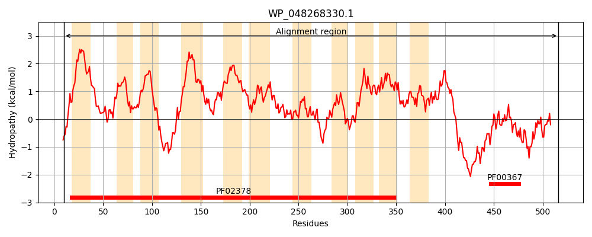
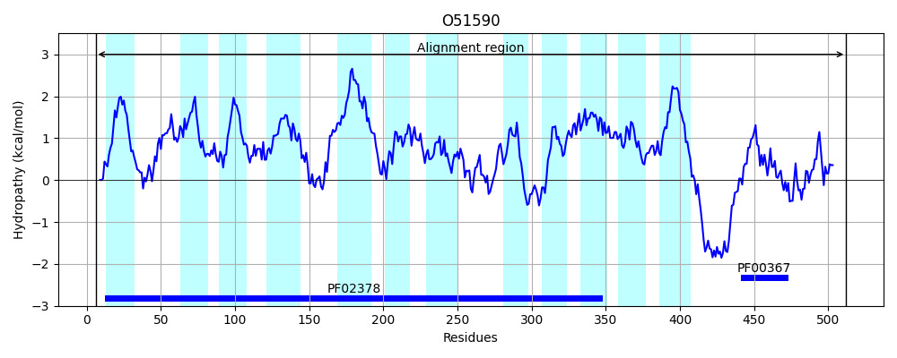
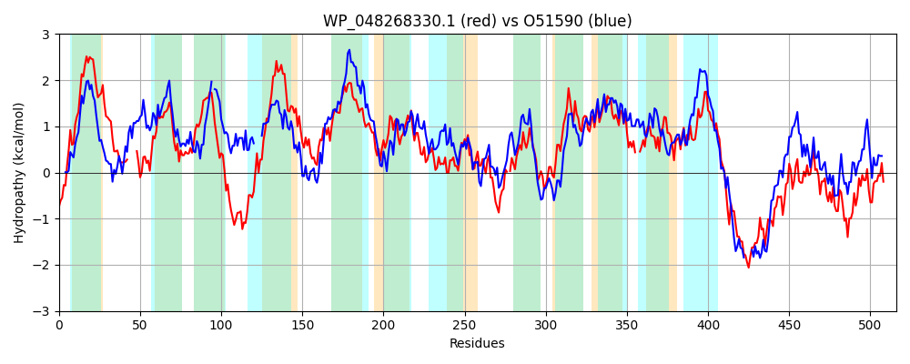

Hit Accession: O51590
Hit TCID: 4.A.1.1.18
Hit Description: gnl|BL_ORD_ID|7296 gnl|TC-DB|O51590|4.A.1.1.18 Pts system, iibc components OS=Borrelia burgdorferi (strain ATCC 35210 / B31 / CIP 102532 / DSM 4680) GN=BB_0645 PE=4 SV=1
Mach Len: 516
e:0.000000
Query TMS Count : 11
Hit TMS Count: 12
TMS-Overlap Score: 9.150000
Predicted Substrates:CHEBI:5418;glucose
BLAST Alignment:
Score: 764 , Bit scores: 298 bits, E-value: 1.8e-95, Alignment length: 516, Percentage identity: 34
Query: 10 ENMQKFSRAMIGAVLFLPVIGLILALSSVLTNPTLIAETSFLH-----QLGQMLGDTFWPLFGNLGLLFCVGISYGLAKDKKTEVALVAVMCFIMFLGANHSWLEHTHGLAEKINGEYYGTGQTQLLGFVVVDMGVFLGIILGCTIAWVHNKVSAIELPGALSMYGGAKLTLVAMTPVVIFYAIAFTWIWPFMTHGISALTGFMKNAGVAGVFVYGFFEKFLIPTGLHHFVWSPFQLTQIGGTLNVDGQVVSGTQAIFLAYMRHPDLTPVMNDALRF-SQQGMTTIFGLAGASLAFYHTAKPEKKVMAKAILLPAIITSMLTGITEPIEFTFLFVSPLLWVIHATLTAASQAICDI--FTVRPWGASGLIEFLIYNLPLPVSLTRWPGYVLIGIGQFAVYYVIFRTLVVKLNLKTPGREDDENVKLYSKAEYRQKVSQ-PQSVTDDIIRGLGGKENILSVDNCFTRLRVAVRDMARVDDAQLKNTGANGVVRNRNEVQVIYGVKVGQVRSRVDNWL 516
E QKF R+ + + LP GL+L + L+NP + SFL+ + +++ + +F NL +F +GI+ GLAK K + A + +++ + A L G AE + G +LG ++ GVF G+++G ++H++ + ++LP L + G++ + ++ IF A+ +WPF+ GI+ + G + + G G +YG F + L P GLHH + PF T +GG++ +DG+++ GTQ IF A + RF S + +T +FGL GA+LA Y+TAK E++ +L+ + +TS LTGITEP+EF+FLFV+P+L+V+HAT + + I T+ + G ++F+++ + S T W +IGI F +YY F L+ K + KTPGR D N S+ K S+ ++ +I GLGG NI+ +D C TRLR+ VRD+ +V + LK TG+ GV+ N VQV+YG V +++ ++ L
Sbjct: 6 EQAQKFGRSFMLPIAILPAAGLLLGIGGSLSNPETVRTYSFLNIFFLQSVFKIMSASGSIIFSNLAPIFSIGIAVGLAKSDKGTSGIAAFIGYLV-MNATIGVLIDVSGRAESFSSGAVGF----VLGIKTLETGVFGGVVVGILTYYLHSRFNKVDLPKVLGFFSGSRFVPIIVSFSSIFLAVIMFLVWPFVQSGINKVGGLVDSTGYIGTLIYGIFLRMLGPFGLHHIFYLPFWTTGLGGSVIIDGKLIEGTQNIFFAELAAQGTDRFFIGTSRFMSGRFITMMFGLPGAALALYYTAKREERTKVFGLLMSSALTSFLTGITEPLEFSFLFVAPILYVVHATFDGFAFMLAHILQITIGQTFSGGFVDFILFGILQGNSRTNWLLVPVIGIVWFFLYYFTFIFLINKFDFKTPGRTQDLN----SEDSPSSKSSEFEENYATKVIIGLGGASNIVELDCCATRLRITVRDVLKVSEKILKKTGSKGVIIKGNGVQVVYGPGVSVLKNEIEELL 512 | Protein Hydropathy Plots: |
|---|
|  |  |
Pairwise Alignment-Hydropathy Plot:
|
|---|
|  |